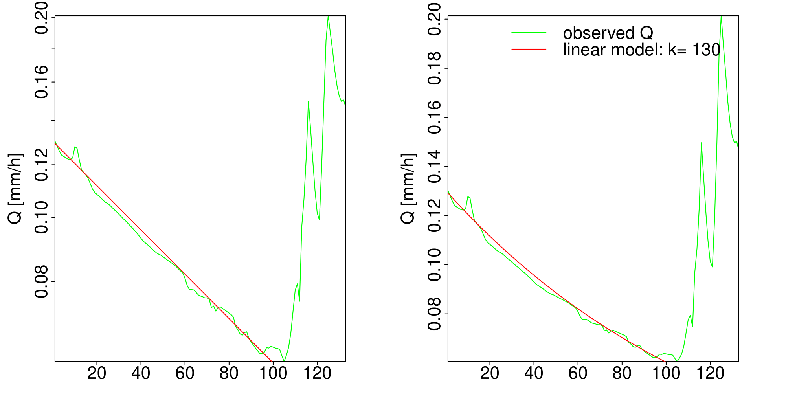
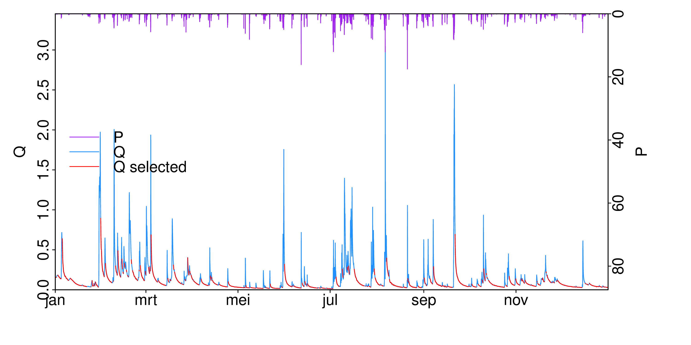
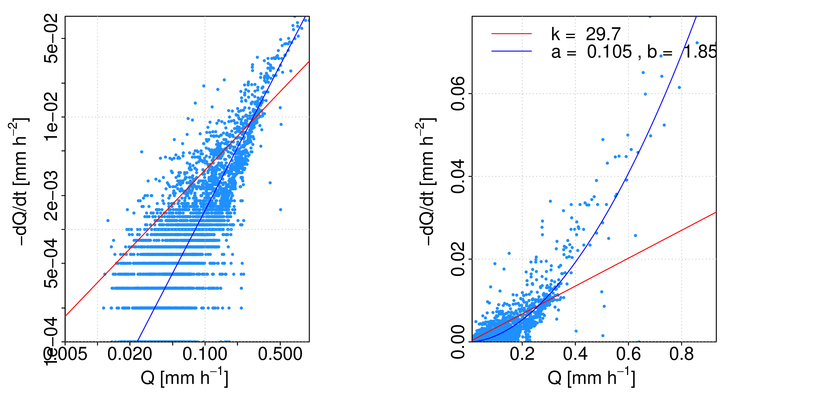
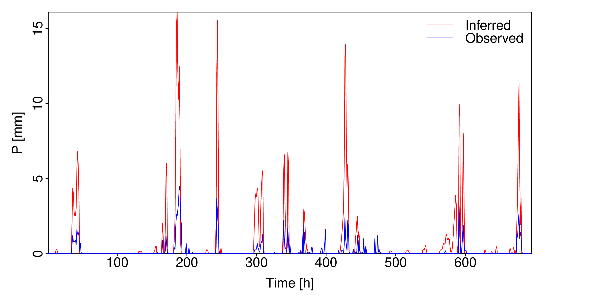
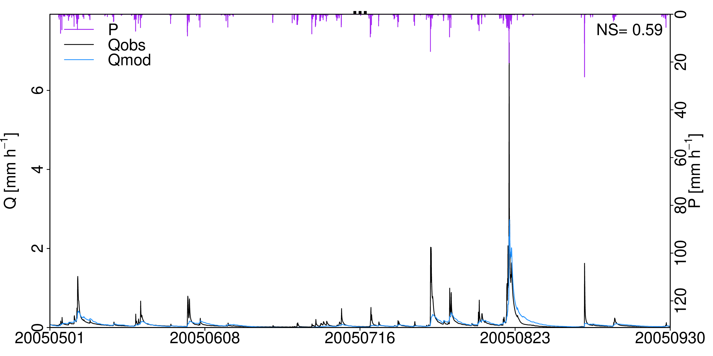

3.3. Recession-based models#
3.3.1. Introduction#
3.3.1.1. The Rietholzbach catchment#
The Rietholzbach catchment (3.3 km2 ) is part of the Thur river basin, located in Northeast-Switzerland (Melsen2014). The altitude ranges from 950 to 682 m, with an average slope of 14.5 \(^\circ\). Land use consists of 72% pastures, 26% forest, 1% orchards and 1% settlements. Soil depth (on bedrock of limestone, dolomite, and conglomerate) varies from 20-50 cm on steep slopes, to several meters in the valley. The simple dynamical system approach has already been applied to the Rietholzbach catchment (Teuling et al., 2010; Melsen et al., 2014).
3.3.1.2. Getting started#
Unzip all files for this practical as a folder on your computer (here).
Open the script recession.R and take a look at it. You will walk through this script line by line, so don’t read or run it all at once. Some parts are preprogrammed; others are not. When you encounter “…” in the script, replace them with appropriate commands (or add lines) and run them with
CTRL+ENTER.
Change the working directory under “Getting Started” and run the lines in this section.
The data in the file PEQ_Rietholzbach_hour.dat are hourly sums of discharge (Q), precipitation (P), actual evapotranspiration measured with a lysimeter (ET), temperature (T), and global radiation (GloRad).
3.3.2. Recession analysis#
3.3.2.1. Individual recessions#
The most straightforward (but not necessarily the best) method to find reservoir coefficients, is to assume a linear reservoir and obtain coefficient \(k\) by fitting curves to individual recessions.
Select one nice recession (one decreasing line, not a complete hydrograph) by hand. Fit a curve (in a graph with linear \(y\)-axis) and a line (in a graph with logarithmic \(y\)-axis) manually through the observed discharges by changing the value of \(k\). Remember that when
the flow out of a linear reservoir can be given by
You have to program this curve yourself, but some help is available in the script.
Practice
What values of \(k\) did you find? Try a few different recessions and look at the variability. Give a best guess and a range. Also write your values on the blackboard in the classroom.

Show Answer
This strongly depends on the period you selected. Values of \(k\) can range from 10 to 200.
What are the units of \(k\)?
Show Answer
\(-dQ/dt = a \cdot Q\)
\(\rightarrow \frac{mm}{h^2}=\frac{1}{[k]} \cdot \frac{mm}{h}\)
\(\rightarrow \frac{1}{h}=\frac{1}{[k]}\)
\(\rightarrow [k] = h\)
What does a large value of \(k\) mean in terms of discharge recession rate? (Does the discharge decrease quickly or not?)
Show Answer
Large k \(\rightarrow\) small \(\frac{1}{k}\) \(\rightarrow\) \(-\frac{dQ}{dt}\) small at a certain \(Q\) \(\rightarrow\) slow decrease (= low discharge recession rate).
3.3.2.2. Discontinuous recession periods#
For this method, you select many smaller recession periods from the whole time series using a set of criteria, such as:
1. There should be no missing data (NA’s).
2. Change in discharge should be negative or zero (discharge should decrease).
3. Precipitation sum of x preceding hours should be zero (no rain for x hours).
4. Discharge should be at least x mm/h.
5.. Evapotranspiration sum of the preceding x hours should not exceed x mm.
6. Something you design yourself.
The first 3 criteria are implemented in the script. In the next exercises you will select recession periods for a set of criteria by changing the criteria in the script and running this part of the script. Look at the data file and figure the script creates to see what it has done.

Practice
What happens to the number and length of selected recession periods when you allow 0.2~mm of precipitation in the preceding 5 hours?
Show Answer
Recession periods start sooner after the rainfall event and are longer.What criterion could you alter when you want to emphasize on the long tails of the recessions instead of the peaks?
Show Answer
Make the parameter
dryhourslarger, so points are only selected when rainfall is a long time ago.Add the criterion that \(-dQ/dt\) should be smaller than a certain value, so you only select the points with a low recession rate.
Add the criterion that \(Q\) should be smaller than a certain value, so you only select low flows.
Try some other selection criteria (don’t spend more than 30 minutes on this part and skip this if it’s later than 9:15).
BONUS What other criteria did you use and what were the results for the selected periods?
Show Answer
No \(ET_{pot} \rightarrow\) only night-hours included.
\(Q\) should exceed 0.3 mm/h. \(\rightarrow\) emphasis on high flows.
\(Q\) should not exceed 0.05 mm/h. \(\rightarrow\) emphasis on low flows.
Run the script once more with what you consider the best selection criteria (or the starting criteria if you don’t know which ones to choose) so R remembers these recession periods for the next assignments.
3.3.2.3. Fitting recession coefficients in a double-logarithmic graph#
To test whether the Rietholzbach catchment behaves like a linear or nonlinear catchment, plot \(Q\) versus \(-\mathrm{d}Q/\mathrm{d}t\) in a double-logarithmic graph. Fit two lines through the cloud of points, representing a linear and nonlinear model.

Practice
What values of \(k\), \(a\) and \(b\) did you find?
Show Answer
\(k\): 30, \(a\): 0.105, \(b\): 1.85
What do the slope and intercept of the lines represent?
Show Answer
Slope: \(b\) (if linear: slope = 1)
Intercept: \((a)\) (if linear: \(\ln (\frac{1}{k})\) )
What do the lines tell you about the nonlinearity of the catchment?
Show Answer
If \(b \neq 1\), the catchment in nonlinear. The farther from 1, the more nonlinear the catchment is.
BONUS Fit lines for different selection criteria to assess the sensitivity of \(a\) and \(b\) to your choice of selection criteria. Which values did you obtain for which selection criterion?
Show Answer
Depends on your choice.
When you fitted curves to individual recessions, you included all hours of the day, while (Kirchner2009) excluded the hours during which \(ET>0\).
Is the recession rate \(-\mathrm{d}Q/\mathrm{d}t\) higher or lower during day-time than at night? Why?
Show Answer
Higher, because evapotranspiration causes additional decrease in storage and therefore in discharge.Think about what would happen to the fitted lines in the (\(Q\),\(-\mathrm{d}Q/\mathrm{d}t\))-plot if you would exclude day-time hours from you analysis (so when \(ET=0\)).
Show Answer
The average recession rate is lower, so the fitted lines will be lower.If there is enough time, you can try it as well.
Write your best guesses of the values of \(k\), \(a\) and \(b\) on the blackboard at the front of the classroom.
3.3.3. Doing hydrology backward#
You estimated recession coefficients for the Rietholzbach catchment, both for a linear and a nonlinear reservoir. With these very simple models, you can simulate discharge using precipitation data (which you will do in sec.3.3.4). In this Section, you will use the same coefficients to do the opposite: obtaining precipitation from discharge.
Use the function select_part to cut one year from the entire data frame and put them in a smaller data frame (called d). The function select_part is preprogrammed and stored in a different script (you don’t have to change anything in the script, but you can take a look at the script select_part.R to see what is does). Some hints are given in the script on how to call this function.
Practice
Why would you want to infer precipitation from discharge observations?
Show Answer
Because rain gauges measure on a small spatial scale, while often precipitation at catchment scale is required.As a first estimate, assume that the Rietholzbach catchment can be described by a linear reservoir. Use the k you obtained in the previous assignments to express a_new in the script, and fill out the correct value for b_new if a linear reservoir is assumed.
Write the expression for the sensitivity function \(g\) with your parameter values (use (3.4))
Show Answer
\(g(Q)=a Q^{b-1}\), so for a linear reservoir \(g = \frac{1}{k} \cdot Q^0\)
Which important assumption concerning evapotranspiration does Kirchner make in order to be able to infer precipitation?
Show Answer
That there is no or negligible evaporation during precipitation.On page 21 of the article by (Kirchner2009) the expression for precipitation inference in given. This expression is implemented in R. Run the lines to infer precipitation and compare the results to measured precipitation: plot them, compute the precipitation sums and check the correlation.
Also a time lag is incorporated in the model, because usually it takes some time for a catchment to respond to rainfall. This would mean that, if we infer precipitation from discharge directly, we should correct for the time lag between precipitation and discharge. Try different time lags (by changing l in the script) and see if it improves the inferred precipitation.

Practice
In what order would you expect the lag to be in the Rietholzbach catchment? Why?
Show Answer
In the order of one hour or smaller. This does not improve the precipitation inference.Try different values for a_new and b_new, also using a nonlinear reservoir.
Does this improve the precipitation inference?
Unsatisfactory inference results may be caused by the many assumptions in this approach. But despite these assumptions, inferred precipitation will never be equal to measured precipitation. Why?
Show Answer
Because inferred precipitation is lumped catchment precipitation, while measured precipitation is a point measurement.3.3.4. Rainfall-runoff modelling#
The nonlinear reservoir from which you just determined the reservoir coefficients can be seen as the main building block of the simple dynamical system model. In this Section, you will build this model. Close the previous script and open build_model.R. As you can see, this script is rather empty. You will program the model step by step. If you’re stuck, you can look in the ``hints’’-folder. So, you can make it as difficult for yourself as you want. Do make sure that you have a working model by 12:15, so you can start working on the final assignment then.
3.3.4.1. Model architecture#
The model consists of 3~functions, which you will write yourself. The core of the model is formed by the differential equation representing the nonlinear reservoir Sec: 3.3.4.2. To solve this equation, you use an integration scheme in which this differential-equation-function is called Sec: 3.3.4.3. Finally, you run a for-loop over all timesteps, and in each time step you use the integration scheme Sec: 3.3.4.4.
3.3.4.2. Differential equation#
As mentioned in (3.6), the model equation will be solved in terms of the logarithm of \(Q\). By introducing a variable \(x\),
you can rewrite (3.6) to
Write a function (with name diff_eq) in the script which computes \(\frac{\mathrm{d}x}{\mathrm{d}t}\) (so which returns the right-hand side of this equation) given a certain \(x\), \(P\), \(ET\), \(a\) and \(b\). Later on, you will use this function every time step, so to make clear that you want one value of \(P\), \(ET\) and \(x\) and not the whole vector, give the arguments the names Pi, ETi and xi (and a and b). Note that in R, the function log computes the natural logarithm and exp the exponent.
3.3.4.3. Runge-Kutta integration scheme#
There are many ways to solve (3.10) numerically. The most straightforward way is Euler forward, in which a new value of a variable (\(x_{i+1}\)) is computed from the old value (\(x_i\)) by
Because the Euler forward method is not always stable, you will use the Runge-Kutta method instead (you can also try the Euler forward method if you want). In the Runge-Kutta integration scheme, you solve this differential equation in steps. When (3.10) is abbreviated to \(\frac{\mathrm{d}x}{\mathrm{d}t} = f(x(t))\), these steps are:
Program a function called runge_kutta with the same arguments as diff_eq. Within the runge_kutta-function, perform the integration steps by calling the diff_eq-function with different values for the argument xi and return \(x_{i+1}\). Use \(\Delta t = 1\) h.
3.3.4.4. For-loop#
Next, make a function called run_model with arguments forc (a data frame with forcing data \(P\) and \(ET\)), a and b. This function consists of three parts.
Make an empty vector called
x. Fill the first element ofxusing the observed ( Q ) at ( t=0 ) (this is the starting value ofx), which you can extract automatically from theforcdata frame.Run a for-loop over all timesteps, starting with timestep number 2 (as you already have the first one). For each step, call the function
runge_kuttaand write the result in the vectorx. In this way, all elements in the vectorxwill be filled step by step.Compute ( Q ) from
xand return this modelled discharge.
3.3.4.5. Run#
When you have programmed the three functions, you are ready to run your model. Select one year from the whole data file and run the model by calling the function run_model. Plot the results (using the preprogrammed function plot_output) and save the output. Try different values of \(a\) and \(b\) which you obtained with recession analysis and store the output with different names.
If it doesn’t run, check your code from Sections 3.3.4.1-3.3.4.2 with the last hints.
If discharge drops to -inf and the NA, you may need a lower boundary for x (see last hint).

Practice
When is the model able to simulate the observed discharge well and when does it fail?
Show Answer
Depends on your choice of period.Simulate a summer period. Discuss how the model performs
Show Answer
Depends on your choice of period.Simulate a winter period with temperatures below zero. Discuss how the model performs
Show Answer
Depends on your choice of period.3.3.4.6. Run#
You can also adjust the values of \(a\) and \(b\) to better fit the observed hydrograph. You can do this manually, by changing \(a\) and/or \(b\), running the model and evaluating the outcomes by eye.
Practice
What happens to the hydrograph when you increase \(b\) while keeping \(a\) the same? You can answer this by explaining the effect of a higher \(b\) on the log-log plot from Sec. 3.3.2.3 or by trying and looking at the effect on the hydrograph.
Show Answer
When you increase \(b\), the line in the (\(Q\),\(-\mathrm{d}Q/\mathrm{d}t\))-plot becomes steeper. Because the \(y\)-axis is on the right hand side of the plot, the left end of the regression line becomes lower. So, at low discharges, discharge will drop less quickly than with lower values of \(b\), resulting at flatter recessions in summer periods.
What happens to the hydrograph when you increase \(a\) while keeping \(b\) the same?
Show Answer
When \(a\) is higher, the intercept with the \(y\)-axis becomes higher. The whole curve will be lifted in the (\(Q\),\(-\mathrm{d}Q/\mathrm{d}t\))-plot. So, recession rates will increase for all discharges. Discharge will drop more quickly during peaks and during recessions.
You can also use an optimization algorithm to find good values for \(a\) and \(b\). In the script, the Levenberg-Marquardt optimization algorithm is used. This algorithm was preprogrammed in the R-package minpack.lm, which you loaded at the beginning of the script.
Which values of \(a\) and \(b\) did you find?
Show Answer
Depends on your period and the values you tried.The Levenberg-Marquardt algorithm is a variation on the classical steepest descent method, without a random component. This means that when you start with the same values, you will always end up in the same optimum. This optimum, however, can be local instead of the global optimum you were searching for.
BONUS Use different starting values for the optimization procedure to get a few good parameter sets. Which values did you find now?
Show Answer
Different results possible.The optimization algorithm also provides information on the significance of the obtained parameter values and parameter dependence.
BONUS Are your results significant?
Show Answer
This depends on your starting values and the period you used. The number of stars (with maximum of three) behind the summary expresses the significance.BONUS Are \(a\) and \(b\) independent? Can you explain the dependence with the (\(Q\),\(-\mathrm{d}Q/\mathrm{d}t\))-plot?
Show Answer
Probably not. When you increase \(a\), \(b\) should often also be increased. This makes sense when you look at the (\(Q\),\(-\mathrm{d}Q/\mathrm{d}t\))-plot. When \(a\) is increased, the intercept of the line is higher. Because the \(y\)-axis is on the right hand side of the plot, the right end of the regression line becomes higher. To make the regression line go through the points again, you should increase the slope \(b\).
3.3.4.7. Final assignment#
Give an estimate of the peak discharge around 7 and 8 August 2007 using the simple dynamical system approach. For this period, \(P\) and \(ET\) are given, but the \(Q\) data are replaced with NAs. Run the model with different parameter sets to assess the effect of parameter uncertainty on the model outcomes. You are also welcome to try different initial conditions or put noise on the observed \(P\) or \(ET\) to simulate measurement errors.
You can run the model for a longer period around the period with missing data. Make sure to start on a day when there was still discharge available, because otherwise the model does not have starting values (since they are derived from \(Q_0\)) and will not run.
Cut out the discharges from 7 and 8 Aug. Make one vector of these 48~hourly values. Copy this vector to your clipboard (preprogrammed in the script) and paste it in Google Sheets before 13.00. We will discuss the results at 13:05.
3.3.5. References#
Brauer, C.~C., Teuling, A.~J., Torfs, P.~J.~J.~F., Uijlenhoet, R. (2013). Investigating storage-discharge relations in a lowland catchment using hydrograph fitting, recession analysis, and soil moisture data. Water Resources Research, 49, 4257–4264.
Brutsaert, W., Nieber, J.~L. (1977). Regionalized drought flow hydrographs from a mature glaciated plateau. Water Resources Research, 13, 637–643.
Kirchner, J.~W. (2009). Catchments as simple dynamical systems: catchment characterization, rainfall - runoff modeling, and doing hydrology backwards. Water Resources Research, 45, W02429.
Melsen, L.~A., Teuling, A.~J., van Berkum, S.~W., Torfs, P. J.~J.~F., Uijlenhoet, R. (2014). Catchments as simple dynamical systems: A case study on methods and data requirements for parameter identification. Water Resources Research, 50, 5577–5596.
Teuling, A.~J., Lehner, I., Kirchner, J.~W., Seneviratne, S.~I. (2010). Catchments as simple dynamical systems: Experience from a Swiss prealpine catchment. Water Resources Research, 46, W10502.